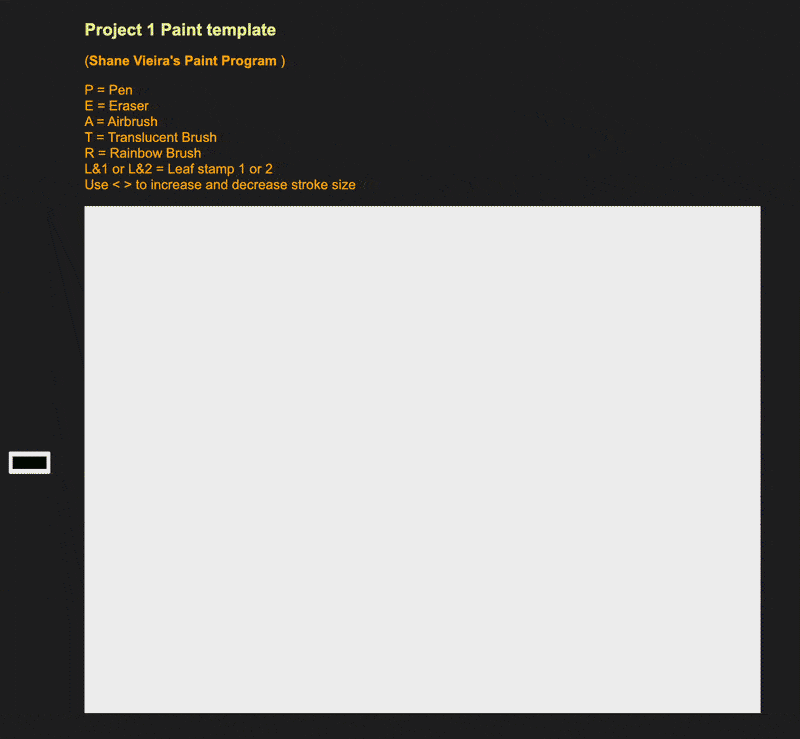
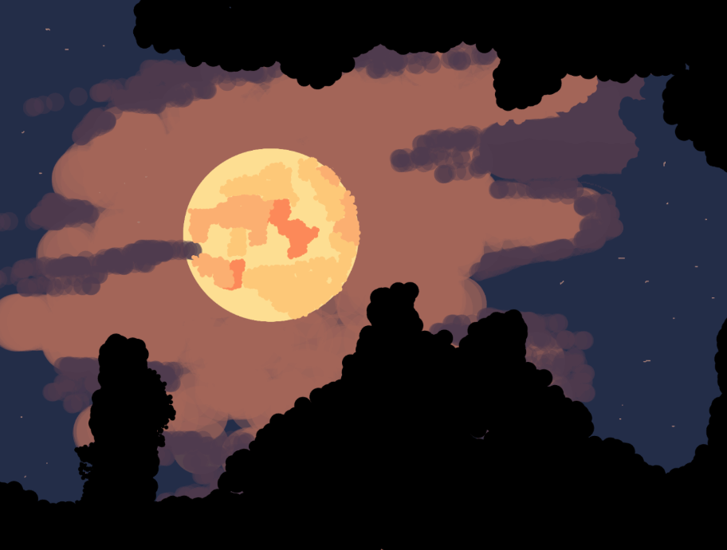
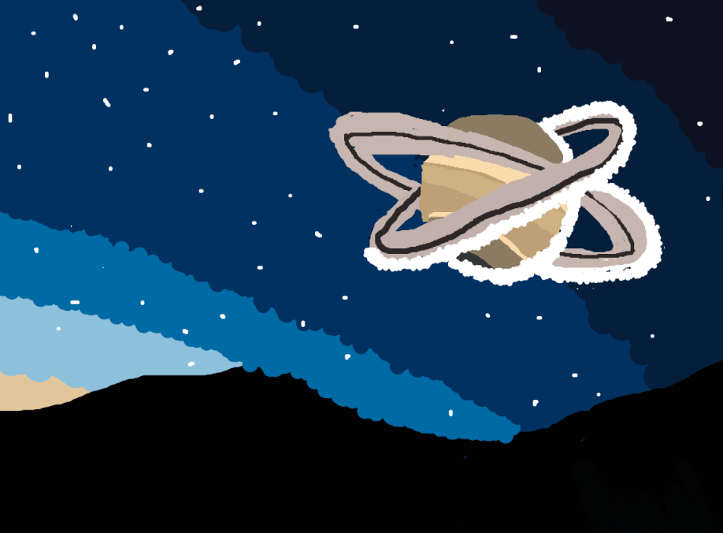
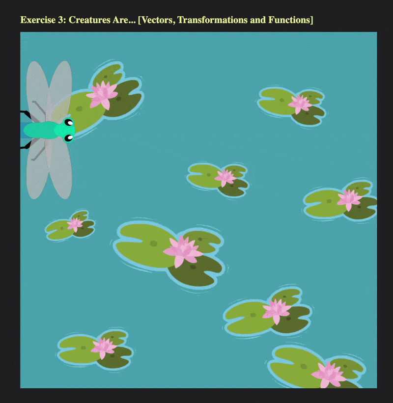

P5js Projects

Drawing Program
See Project Code Run Project Code
The objective of this project was to develop a custom drawing program using P5.js and to create a few artworks with it. During the process of creating my custom drawing program, I designed several custom brushes, including a rainbow brush, an airbrush, an eraser, and a custom PNG brush. Some excample drawings using the program are shown below.
Finished Works from Drawing Program


Sine Wave Animation
See Project Code Run Project Code
In my sine wave animation project, I aimed to explore the capabilities of P5.js by creating a short stop-motion animation. I divided the animation into three acts, filming each section separately. I then created transitions between the acts to ensure that the animation flows smoothly and complements the music effectively.

Dragonfly Animation
See Project Code Run Project Code
The goal of my dragonfly animation project was to use custom functions to create a creature of my choice and then animate it using P5.js. I chose a dragonfly because it symbolizes transformation and adaptation, which resonated with my experience of being in a new college and trying to find my footing during that time.